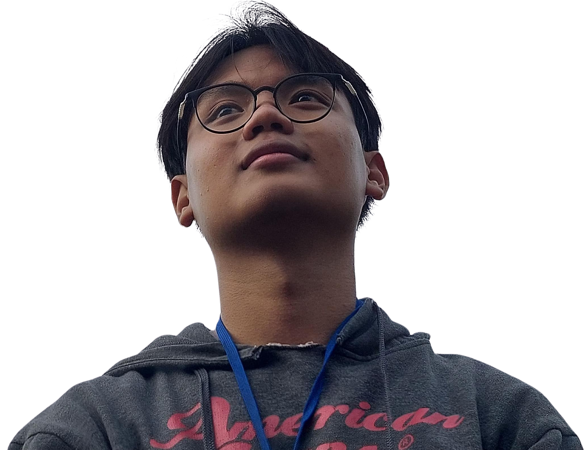
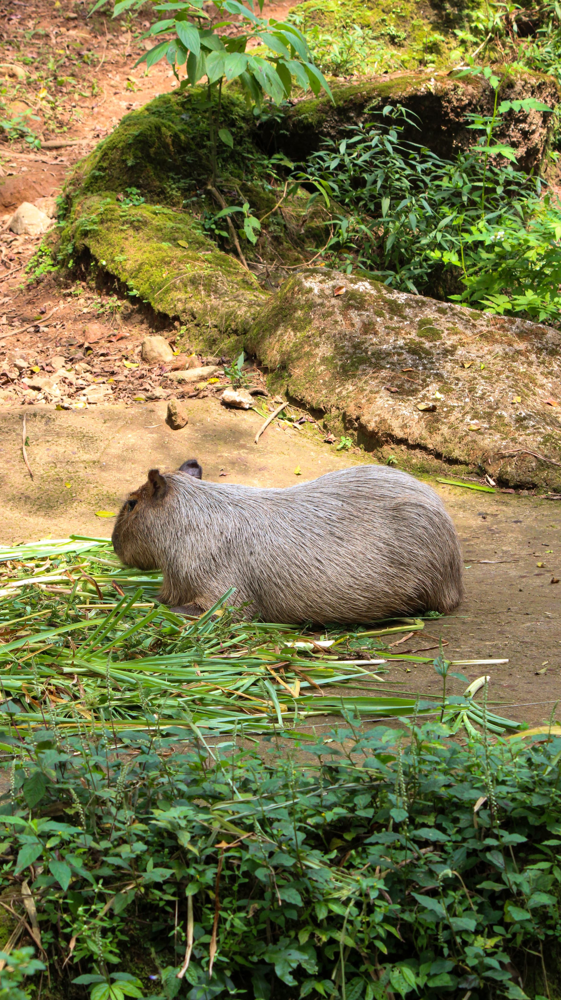
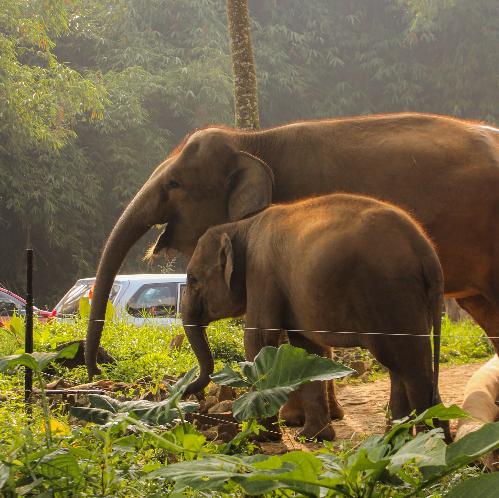
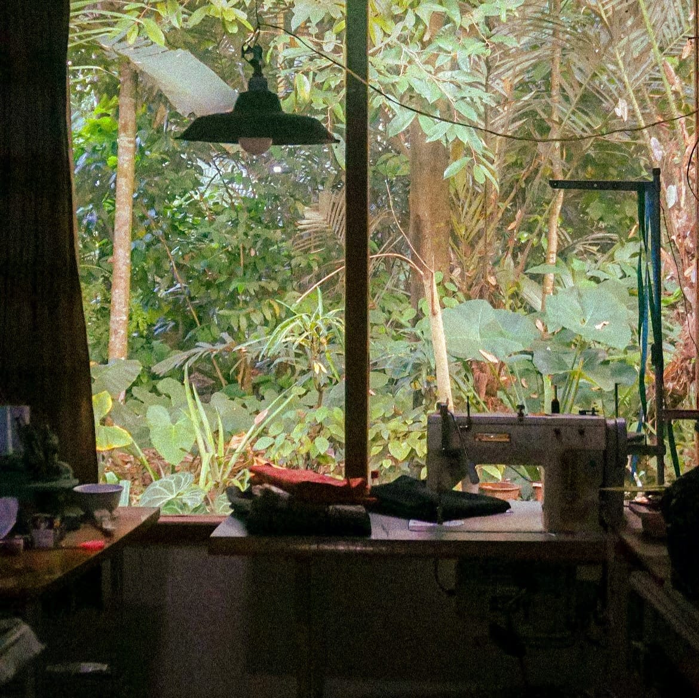
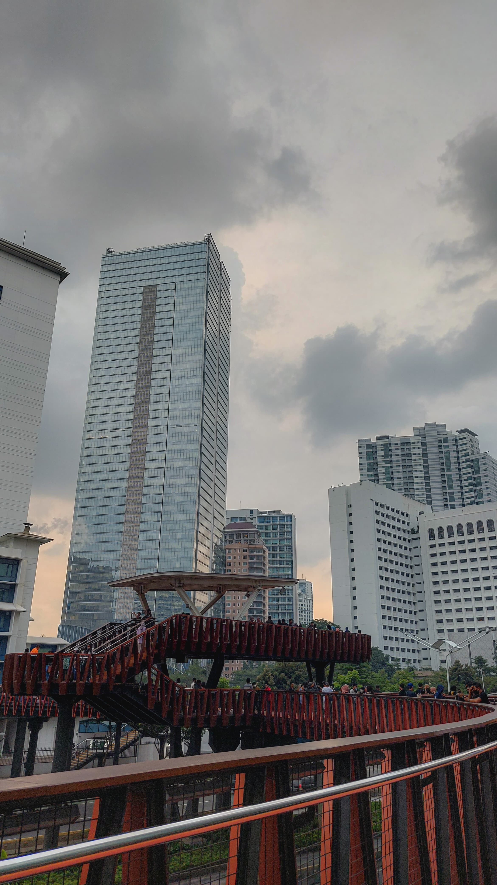
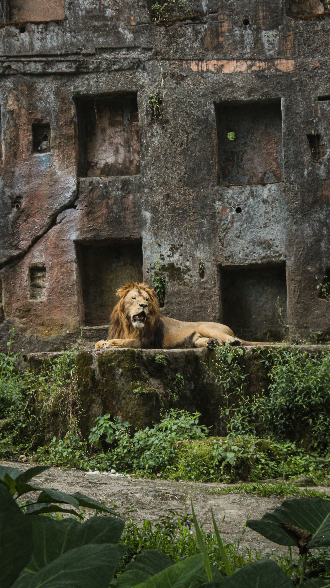
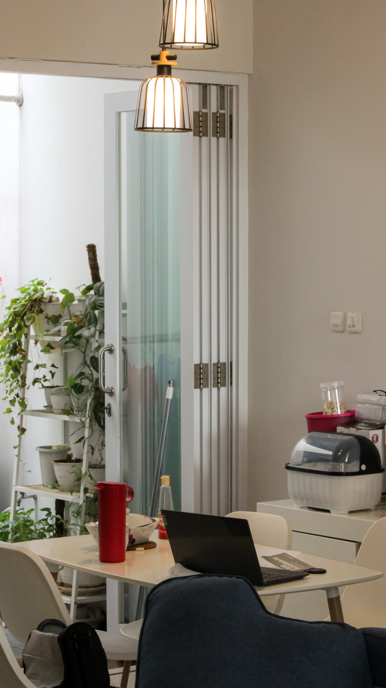

about me
Hai! aku syafiq. Aku adalah seorang mahasiswa ilmu komputer yang mempunyai hobi sinematografi dan juga komputer. Aku suka keduanya sejak aku 10 tahun. Aku mengambil gambar menggunakan handphone dan beberapa menggunakan kamera DSLR Canon Kiss X5. Sekarang aku mencoba untuk develop beberapa web serta mempelajarinya.






